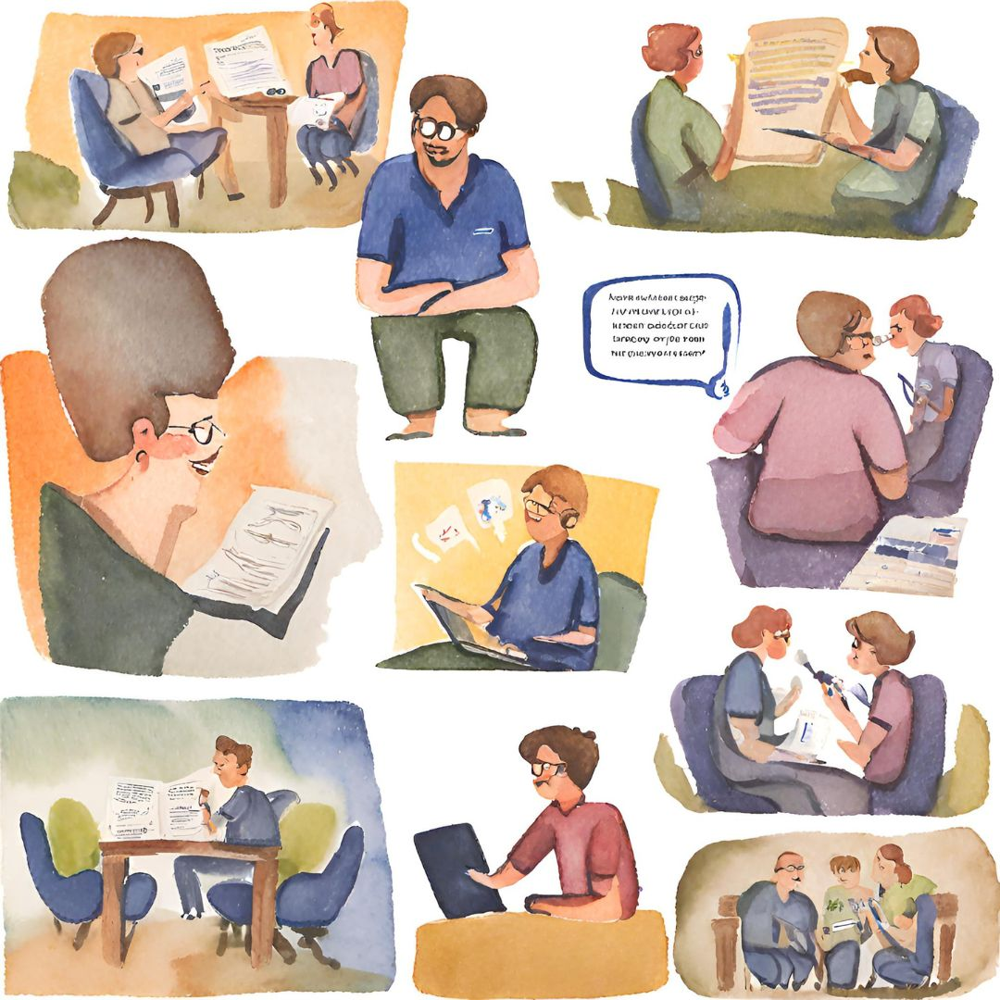

2. Dialoga
Deja en remojo la información obtenida y agrega una cantidad importante de diálogo con la comunidad o público objetivo con el que vas a trabajar, te pueden dar conocimientos importantes que te ayudarán a desarrollar el producto editorial con mayor precisión.
